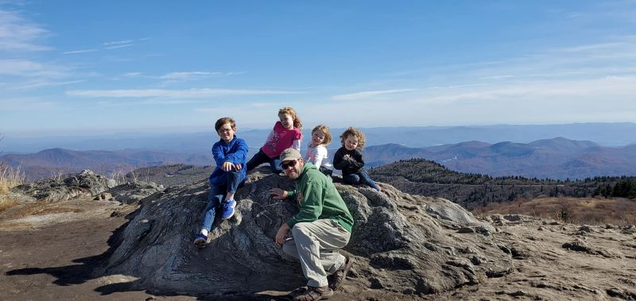

Hi! My name is Kaci Post and I live in the beautiful Blue Ridge Mountains of Western North Carolina. I am
a mother of 4 children and a wife of over 10 years. We love searching for the next adventure, whether it be
to a summit, waterfall or swimming hole. Our little town of Brevard, North Carolina is known as the land of the waterfalls,
and we're surrounded by several National Forests and State Parks, which makes the adventure seeking easy and fun.
I earned a Bachelor of Arts in Interdisciplinary Studies, Elementary Education (K-8) from Western
Governors University in May of 2016. I spent 5 years teaching in Title 1 public schools at both the
Elementary and Middle School level. During my time I was active in the STEM department, passionate about
helping students engage positively in Science, Technology, Engineering and Mathematics. This was a main
motivating factor in my decision to learn more about coding.
I am continuing to grow my skill set and add to the technologies that I am proficient in, by taking on new pojects and utilizing online learning platforms.
Learning is something that I enjoy and excel at, so pushing myself to continue my education in software development is something that I am passionate about.
I am very motivated and teachable and would welcome the opportunity to have mentorship in the field, while positively contributing to an engineering team.
